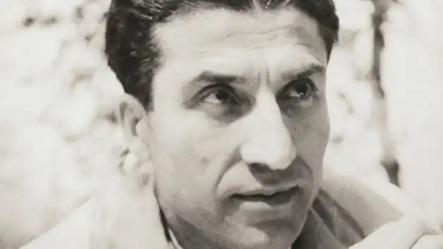
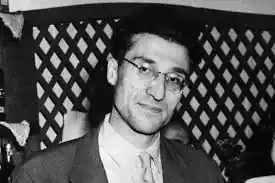

Чезаре Павезе народився 9 вересня 1908 го в Санто-Стефано-Бельбо, селі, де народився його батько, в провінції Кунео (Santo Stefano Belbo; Cuneo). Щороку на літні канікули Павезе повертався в свої рідні краї. У молодших класах Чезаре навчався в Санто-Стефано-Бельбо, але подальше освіту здобув в школах в Турині (Turin). Учителем, які надали на Павезе найбільший вплив в ті роки, був Аугусто Монті (Augusto Monti), не тільки педагог, але і письменник, чий авторський стиль був позбавлений будь-яких риторичних прикрас.
Будучи молодим письменником, Павезе виявляв особливий інтерес до англійської літератури. Він закінчив Туринський Університет (University of Turin), захистивши дисертацію по поезії Уолта Уїтмена (Walt Whitman). Серед його наставників в універі був Леоне Гінзбург (Leone Ginzburg), фахівець з російської літератури і літературної критики, чоловік письменниці Наталії Гінзбург (Natalia Ginzburg) і батько майбутнього історика Карло Гінзбурга (Carlo Ginzburg). На цьому етапі кар'єри Павезе також займався перекладами як класичних, так і недавно відбулися американських і британських авторів, які тільки-тільки ставали впізнаваними серед італійської публіки.
Павезе приєднався до антифашистським рухам. У 1935-му він був заарештований і засуджений за виявлені при ньому листи від політичних в'язнів. Провівши кілька місяців у в'язниці, Чезаре виявився включений в програму 'Конфіно', мається на увазі посилання в Південну Італію (Southern Italy), зазвичай призначалися для тих, хто винен в несерйозних політичних злочинах. Карло Леві і Леон Гінзбург (Carlo Levi) також пройшли процедуру висилки з Турина. Роком пізніше Павезе повернувся в Турин, де працював в якості перекладача і редактора на видавця Джуліо Ейнауді (Giulio Einaudi) з лівого крила. Разом з ним працювала Наталія Гінзбург. Павезе жив в Римі (Rome), коли був покликаний в фашистську армію, але через астму провів півроку у військовому госпіталі. Коли вона повернувся в Турин, німецькі війська окупували вулиці, і більшість його друзів пішли на боротьбу з фашистським режимом в підпіллі. Павезе втік в горбисту місцевість, що оточувала комуну Серралунга-ди-Креа (Serralunga di Crea), недалеко від міста Казале-Монферрато (Casale Monferrato). Він не брав участі у збройній боротьбі. Проживаючи в Турині, Павезе був наставником молодої письменниці і перекладачки Фернанди пива (Fernanda Pivano). Чезаре довірив їй перекласти з англійської частина поетичної збірки Едгара Лі Мастерса (Edgar Lee Masters) 'Spoon River Anthology' 1915 го, і плоди її першого успішного праці можна було побачити в 1943-му році. Після війни Павезе приєднався до Італійської комуністичної партії (Italian Communist Party) і працював на партійну газету 'Уніта "(" L'Unità'). Основна частина його робіт була опублікована в період цієї співпраці. Ближче до кінця свого життя письменник все частіше відвідував область, де народився і де знайшов для себе розраду. Депресія, спровокована його останнім невдалим романом з актрисою Констанс Доулінг (Constance Dowling), підштовхнула Павезе до самогубства в 1950-му через передозування барбітуратами. Болісні і розірвані відносини з нестандартно красивою голлівудською дівою, відомої в Америці та Італії, прийшли до Павезе одночасно зі світовою популярністю. У 1950-му він отримав національну 'Strega Prize' за його твір "Прекрасне літо '(' La Bella Estate '), роман з трьох повістей:' La tenda ', написаної в 1940-му; 'Il diavolo sulle colline' 1948 го і 'Tra donne sole' 1949-го . Міркуючи про смерть Павезе, Леслі Фідлер (Leslie Fiedler) написав: "... для італійців його смерть настільки ж важка, як для нас (американців) смерть Харта Крейна (Hart Crane) ... '. Його самогубство в готельному номері фактично імітувало останню сцену з його ж новели 'Тільки серед жінок' ('Tra Donne Sole') з передостанньої книги. Остання книга 'Місяць і багаття' ('La Luna e i Falò') була опублікована в Італії в 1950-м і переведена на англійську ('The Moon and the Bonfires') Луїзою Сінклер (Louise Sinclair) в 1952-му. Типовим головним героєм творів Чезаре був одинак, іноді з думками про смерть, свідомо чи низкою обставин прийшов до такого стану. Його відносини з чоловіками і жінками, як правило, носять тимчасовий або поверхневий характер. Буває, що герой шукає більшої спільності з іншими, але все це закінчується зрадою своїх же ідеалів і друзів. Наприклад, у творі 'Тюрма' ( 'The Prison') персонаж, засланий за політичними міркування в село на північ Італії, отримує лист від іншого ув'язненого, який пропонує завести знайомство. Однак головний герой відмовляється відчувати почуття солідарності і не йде на зближення. Ланге (Le Langhe), область, куди Павезе хлопчиком приїжджав на літні канікули, була одним з найулюбленіших місць письменника. Ця горбиста місцевість, покрита виноградниками, манила Павезе, де він відчував себе буквально як вдома, але і визнавав жорстокий і суворий уклад бідній селянській життя. У цій же області проходила запекла боротьба між німцями і партизанами. Ланге стала частиною особистої міфології Павезе. За творами Чезаре знято кілька фільмів, включаючи мелодраму 'Подруги' ('Le amiche', 1955) Мікеланджело Антоніоні (Michelangelo Antonioni '), картину' Соціалістичний реалізм '(' El realismo socialista ', 1973) Рауля Руїса (Raoul Ruiz), драму 'З темряви до опору' ('Dalla nube alla resistenza', 1979) Жана-Марі Штрауба (Jean-Marie Straub) і ін.